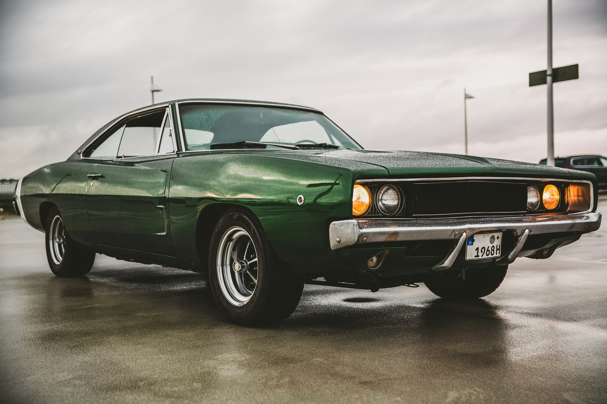

Art Gallery
Dodge Charger old modle
The Charger was redesigned for 1968, and 35,000 units were slated for production. The demand was high, and 96,100 Chargers were produced.[11]
Based on the Chrysler B platform, the 1968 through 1970 model years had cosmetic changes to the exterior and interior. These included going from twin round tail lights to broad horizontal units and adding a horizontal trim to the grille. The powertrains were carried over from 1967, with the 225 cu in (3.7 L) slant-6 available in mid-1968.[12]
The 1968 Charger was unsuccessful in stock car racing, such as NASCAR. A more aerodynamic shape formed the Charger 500 model, later followed by the 1969 Charger Daytona. The 1970 Charger did win the most NASCAR races in 1970, helping Bobby Isaac win the championship that year.
The Dukes of Hazzard television series made the second-generation Dodge Chargers familiar to the American public.
